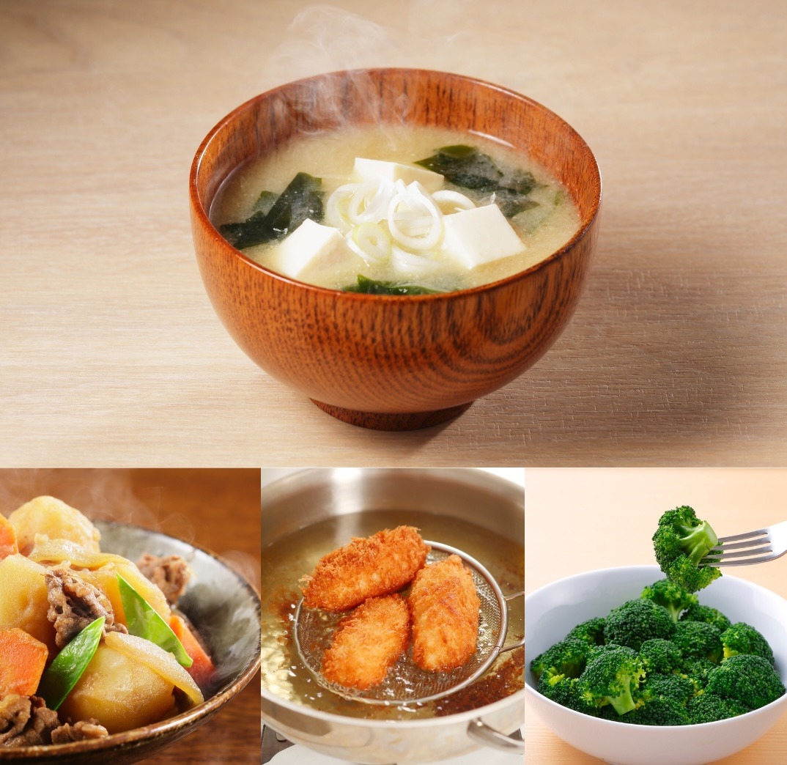
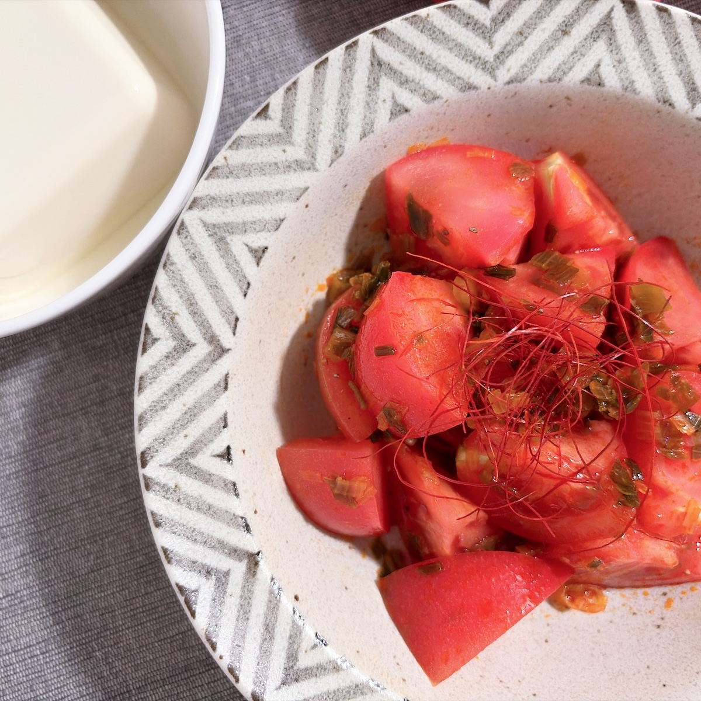

RECIPE
9月のメニュー

超初心者向け 500円体験レッスン
１回限定
下記からお選びください
- 秘伝の煮込みハンバーグ＆オニオンスープ
- スパイスキーマカリー＆手ごねナン
9月本格レッスン
6,000円
2.5〜3時間
盛り付け＆器もアドバイス
【旬を味わう初秋の和食】
おうちで楽しむ初秋の懐石風献立と、魅せる食卓スタイリング
- 浅利と蓮根の炊き込みご飯（物相型）
- 菊花豆腐のお吸い物
- 海老のいが栗揚げ
- 秋茄子の利休和え
- 栗と練乳のほうじ茶プリン
9月基本レッスン
2,500円
1〜1.5時間
Aレッスン（和食）
【1時間で基礎マスター】
鍋炊き秋鮭ごはんといりこ出汁でつくる基本の和食
- 秋鮭と茸の炊き込みご飯
- レモン浅漬け
- だし巻き卵
- いりこだし味噌汁
Bレッスン（洋食）
【ダマにならない！】
手作りホワイトソースとオーブントースターで焼く簡単手ごねパン
- ほうれん草と海老のグラタン
- 手ごねパン
- 卵たっぷりポテトサラダ
- マチェドニア風フルーツポンチ
8月のメニュー

超初心者向け500円体験レッスン
- 秘伝の煮込みハンバーグ＆オニオンスープ
- スパイスキーマカリー＆手ごねナン
基本A
- 群馬県産トマトのねぎラー油和え
- 夏野菜のさっぱり肉じゃが
- 艶々！鍋炊きごはん
- いりこだしで作る、お豆富のお味噌汁
- レンジで簡単♪わらびもち